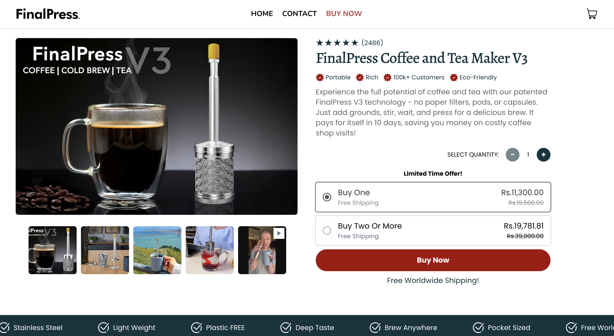

FinalPress Website Redesign & Conversion Optimization


// overview
FinalPress, a coffee and tea maker brand, needed an ongoing partner to take their Shopify store from a slow, generic setup to a fast, conversion-focused storefront. The engagement spanned a full theme redesign and re-platforming, site-wide speed optimization, a custom order-tracking system, and checkout and cart flow improvements built without relying on paid third-party apps.
// challenge
The store's original theme was slow — page speed scores as low as 30 on mobile — which was hurting both user experience and conversions. The client also needed several pieces of core functionality that don't exist natively in Shopify: a way for customers to look up their own order tracking without an expensive monthly app, a streamlined Buy Now flow that skipped the cart page entirely, and checkout-page upsells and order bumps, all while staying within the constraints of what Shopify (and later Shopify Plus) actually allows to be customized.
// solution
Built a custom order-tracking page that matches a customer's email or order number against a Google Sheet via the Sheets API, giving the client a free, self-managed alternative to paid tracking apps — later hardened for privacy by switching the lookup from email to order number after a customer flagged exposed data. Streamlined the purchase flow so Buy Now routes straight to the product page and Add to Cart bypasses the cart page and goes directly to checkout, with the cart still reachable via icon. Carried out a full theme redesign and re-platform in stages, matching new reference designs (from brands like Aeropress) across desktop and mobile, then repeatedly profiled and optimized the site, taking mobile speed from the 30s into the 70s and desktop from the 50s into the 90s. Once the client moved to Shopify Plus, used checkout extensibility to add an in-checkout order bump ("add one more for $X") and an improved review section, and handled a domain migration with redirects to preserve existing Meta ad engagement.